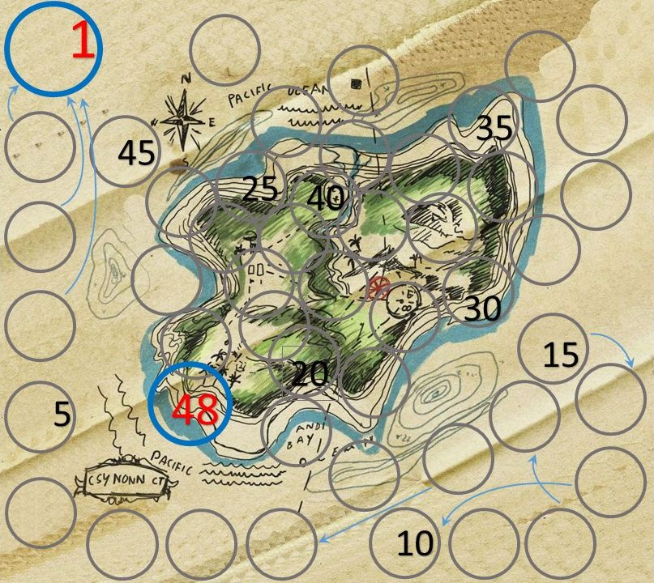
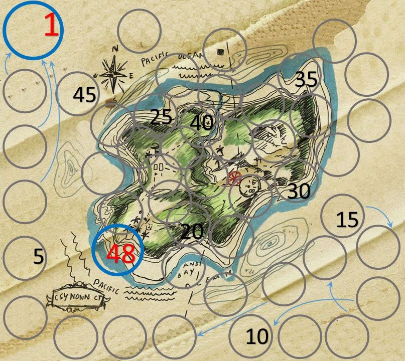

Kincs ami nincs
Leírás: Juss el a szigetre, szerezd meg a kincset és szökj el a szigetről.

grafika: imperat
music: ukulele.hu
thanks: kispalv
Heha Info Szakkor
2019
-
-
-
-
Kincs ami nincsLeírás: Juss el a szigetre, szerezd meg a kincset és szökj el a szigetről. |

|
coding: szalabala grafika: imperat music: ukulele.hu thanks: kispalv Heha Info Szakkor 2019 |
- - - - | ||